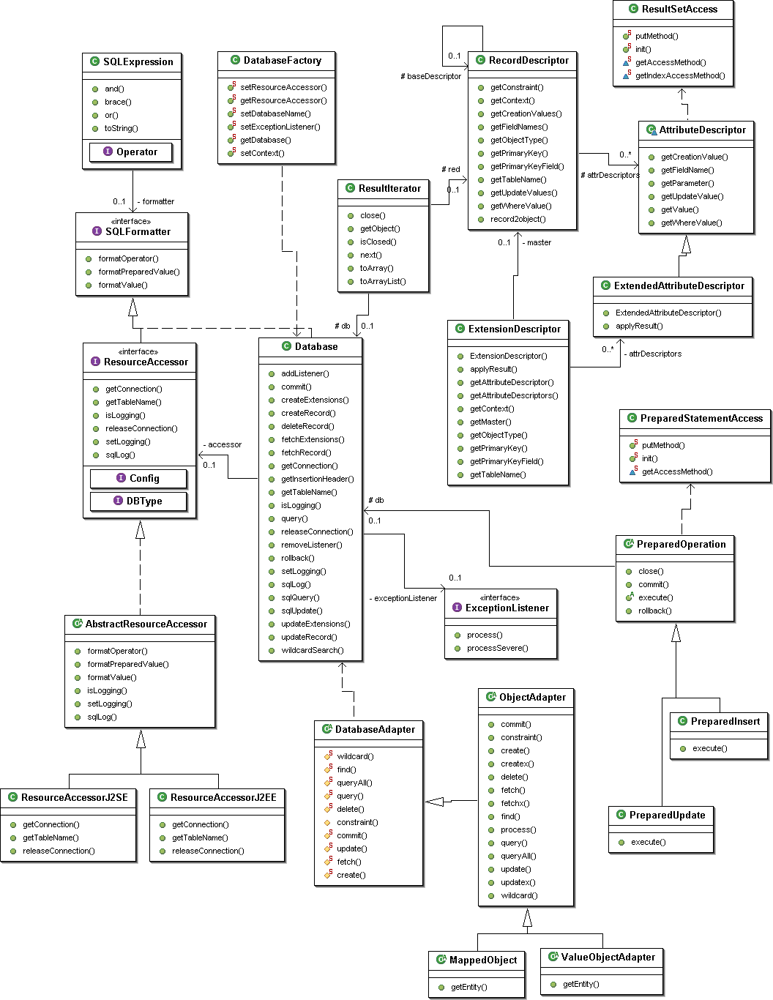

PriDE Inside
Basic Design Principles
PriDE gains its simplicity from a few important design decisions assuming
an application architecture based on approved and widly recommended design
patterns. This allows to dispense with some popular features which make
O/R mapping toolkits fat and sometimes cause a kind of uncontrollable and
unexplainable self-will when being used extensively. Many of these design
patterns are related to a layered software architecture which is most often
used for the design of distributed 3-tier systems. However, a layered architecture
is in general reasonable and strongly recommended for any system of a certain
complexity, not regarding its physical distribution. Applications of low
complexity can usually live with a low-complexity persistence management anyway.
So a closer look on PriDE's design concepts is mainly of interest for middle
and large scale systems.
Pure value object approach
In a layered system architecture it is commonly recommended to use
value objects like Java Beans for communication between client and server
components (see e.g. J2EE Blueprint patterns) rather than passing persistence-aware
objects around, like Entity Beans in EJB CMP or instrumented entites in
JDO. PriDE simply relies on a value object approach all through the system,
even on the O/R mapping level. I.e. for database updates, PriDE gets passed
pure value objects by the caller and it returns pure value objects as result
from a query. Copying data from persistence-aware objects to value objects
can be ommitted.
No relationship support
Another recommendation for layered systems is to hide database access
in appropriate facade components and liberate higher levels from any details
concerning restrictions or capabilities of the database or the persistence
manager (see e.g. design pattern Data Access Object from the J2EE blueprints).
As a consequence, relationship navigation is mainly hidden in the low-level
implementation of Data Access Objects and thus becomes of minor importance.
It could therefore as well be substituted by a less transparent approach
as long as it provides similar convenience. PriDE-Patterns-Relationship.html
demonstrates how to implement inter-object navigation on PriDE's value
object approach in a very convenient way. Some O/R mapping toolkits as
well as the EJB CMP 2.0 standard also proclaim some features for relationship
manipulation to be essential like cascade delete and preservation of referencial
integrity. However, implicite mechanisms like these tend to cause difficult
to understand system behaviour when being used extensively. Moreover they
can just cover a very few technical constraints and don't guarantee
data consistency from a business point of view which still needs
explicit coding. PriDE doesn't support relationships at all, assuming that
any kind of inter-object dependencies are maintained by the business logic.
Explicit load and store operations
PriDE does not attempt to provide any load and store optimization.
Read and write operations called by the application will always cause immediate
database access. Database updates always have to be called explicitly by
the application. If client components get passed value objects anyway (see
above), it is also the client's task to fetch and send data only where it
is actually needed to reduce the communication traffic between client and
server interactions. Otherwise the problem would only have been shifted from
the server-database layer to the client-server layer. So if the client already
takes care for an interaction reduction with its server components, there
is usually not much to optimize on lower levels.
No instance management
As a consequence of the approach above, PriDE does not perform any
management of instances it got passed for update or it returned from a
query. It does not guarantee any object identity, i.e. if the same database
record is queried more than once, PriDE will potentially return multiple
objects representing the same database record. Object identity and object
management is lost on the way to the client anyway when the data is passed
as a value object on a higher level. In the other direction the management
of persistent-aware objects just causes additional coding work to associate
the client's value objects with a managed entity again. This makes sense
only if the managed entities provide some key features like store optimization.
However, PriDE does not provide any features which require an instance
management and so it just keeps from doing so. As an advantage, PriDE's
performance is always predictable and never suffers from transparent instance
management in the background, which often turned out to cause much more
trouble in practice than it solves.
No XML-based descriptors
PriDE follows a very pragmatic approach of mapping Java object attributes
to database record fields. The mapping description is itself just an object
which is usually declared as a static member of adapter classes or self-describing
value types. As an advantage over XML-based descriptors (as required for
most O/R mapping toolkits today), a descriptor object is much more flexible
to use e.g. for optimizations or special cases as demonstrated in PriDE-Patterns-Query.html (class MaxDescriptor).
An XML-based representation for standard descriptors should just be a externalization
form, available as an optional feature and not as an integral, mandatory
part of the core toolkit itself. Moreover it is somehow unsuitable for a
simple framework with a library of about 60 kbyte size, to be based on megabytes-sized
XML parser frameworks and all the incompatibility problems between these.
PriDE is 100% XML-free.
Design
The following picture gives an impression of PriDE's internal class
structure and the most important relationships.

Control flow
The following collaboration and sequence diagramms illustrate the control
flow within PriDE when executing standard operations.
{kind=link}
{kind=link}
{kind=link}
{kind=link}
{kind=link}
{kind=link}
{kind=link}
{kind=link}